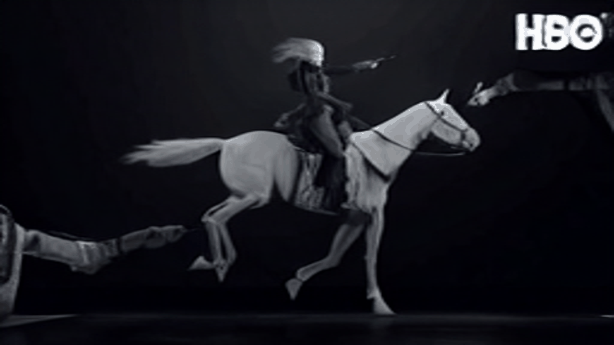
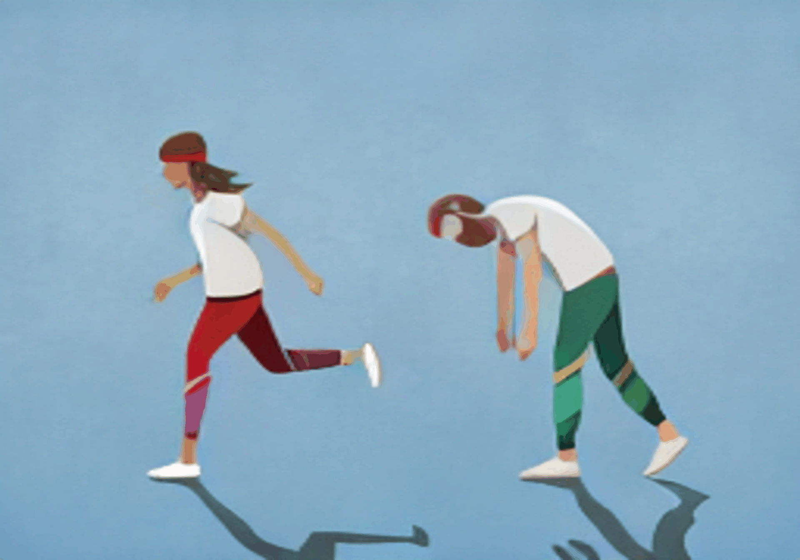
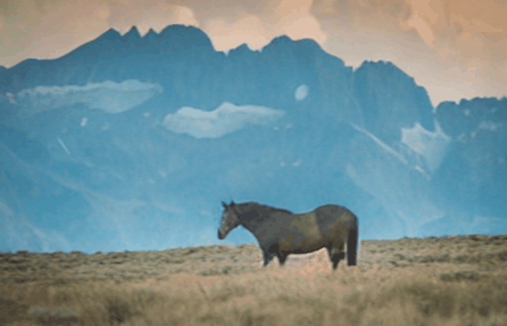
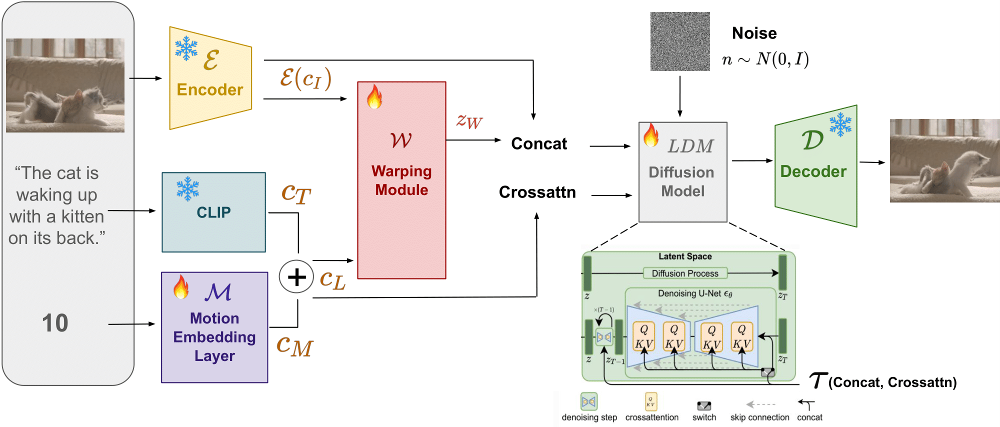

Prompt: The man is riding a horse.
Source: Westworld/HBO
Prompt: The Joker is talking and smiling.
Source: Joker/Batman:Dark Knight
Prompt: A big wave.

Source: The Great Wave off Kanagawa
Prompt: A big sea wave.
Source: Brett Allen/Shutterstock.com
Prompt: Two person are walking.
Source: Malte Mueller/Getty Images
Prompt: The horse is walking.
Source: Ernie Cowan
Abstract
We present Pix2Gif, a motioned-guided diffusion model for autoregressive gif generation. Given an initial image and a text prompt, our model formulates the gif generation as an image translation problem, which autoregressively generates a number of consecutive frames guided by the motion magnitude. To ensure the model follows the motion guidance, we propose a new motion-guided warping module to transform the image features in the hidden space. For the model training, we extract frames from a video-caption dataset - TGIF which after curation is rich in capturing the motion changes between the frames. Our model is built on the Stable Diffusion model and trained on our curated data. Extensive qualitative and quantitative experiments demonstrate the effectiveness of our model, which not only captures the semantic prompt from text but also the spatial ones from motion guidance.
Pix2Gif
Our model is built on the Stable Diffusion but with newly introduced motion-guided warping module. We formualte the gif generation as a temporal instructed image editing problem.

Our Examples
Prompt: A cat is playing with wool.
Input Image
Ours (Pix2Gif)
Comparison to state-of-the-art Image-to-Video Methods
Prompt: A cat is playing with wool.

Prompts: The two person are running.

Prompts: A big wave.

Dataset
We use the TGIF dataset for our model training. The dataset contains 100K animated GIFs with captions. We extract frames from the GIFs and use the captions as the text prompts. We further curate the dataset by removing the GIFs with less than 5 frames and the GIFs with the same captions. The final dataset contains 100K GIFs with 5-20 frames. We split the dataset into 80K for training and 20K for testing.